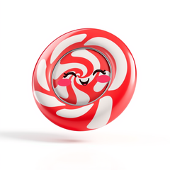

CandyImage
Terminal image viewer CLI

candy-image is a terminal image viewer. Point it at a PNG, JPEG or GIF and it detects your terminal, picks the best protocol (sixel, kitty, iTerm2, half or quarter blocks, an ANSI character ramp, or the symbol engine), and writes the rendered bytes to stdout. It is the chafa-independent front end of sugar-image. The flag spellings are borrowed from chafa, but every render path is a sugar-image call, and this package adds no render logic of its own.
Install
composer require "sugarcraft/candy-image:@dev"Requires PHP 8.3 or newer and the gd extension. Composer installs get both from this package's require, and every render path decodes through GD. The package has no release tag yet and Packagist serves dev-master only, so a project on the default minimum-stability: stable must ask for the dev package with the :@dev suffix.
The phar channel needs no Composer. CI rebuilds a rolling prerelease on every push to master that touches the app or its dependency closure. A downloaded phar carries no extension check, so run it on a PHP build that has gd.
curl -LO https://github.com/detain/sugarcraft/releases/download/candy-image/latest/candy-image.phar
curl -LO https://github.com/detain/sugarcraft/releases/download/candy-image/latest/candy-image.phar.sha256
sha256sum -c candy-image.phar.sha256
php candy-image.phar photo.png
Quickstart
Run the viewer on an image, or ask it why an image looks wrong. The bare form auto-detects the protocol. The flags after it fix the box and the protocol by hand.
candy-image photo.png # auto-detect the protocol and render
candy-image --format=half --size=80x24 logo.png
candy-image --dump-detect # why is my image blank?
candy-image --animate clip.gif # sugar-animation playback of an animated GIF
Without a terminal the viewer falls back to a fixed 60×24 cell box, so a render into a file or a pipe is stable. --format=auto confirms Kitty with a query, so on a pipe it writes symbols text rather than Kitty bytes. Use --format=kitty to force the bytes.
The dump names the environment and the detection chain the viewer consulted. On a tmux session it looks like this (the values are from one real run and will differ on your machine):
candy-image dev-master — terminal detection dump
env: TERM=tmux-256color TERM_PROGRAM=tmux TERM_PROGRAM_VERSION=next-3.6 TMUX=/tmp/tmux-1000/default,1642894,1 ...
term-db: chain=tmux(3.4):vt220 claims=sixel passthrough=sixel=direct mux=tmux(3.4)
detect: sixel=yes kitty=no iterm2=no halfblock=yes chafa=no tmux=yes
detect: summary=Sixel
Concepts
candy-image has one job: take an image file, decide how the terminal can show it, and write those bytes. It does not decode, scale, quantise or encode anything itself. Detection, protocol choice, decoding, scaling and rendering are all sugar-image calls. The package's bin/candy-image is a shim that finds an autoloader and hands off to Cli::main(), so the whole flag surface is testable in-process.
Input is an allow-list
The viewer accepts PNG, JPEG and GIF, recognised by their magic bytes. Anything else is refused with exit 2 and the MIME type it detected, such as Unsupported MIME type: image/webp. WebP and BMP are refused even when the build's GD can decode them. That refusal is a sugar-image decision, and this app does not widen it. --animate plays animated GIF only, because the sugar-animation decoder rejects other bytes.
Protocols and text tiers
Graphics protocols (sixel, kitty, iterm2) hand the terminal an encoded payload. Text tiers (half, quarter, ascii, ansi16, ansi256, truecolor, symbols) draw characters that any terminal can show, at any colour depth. --format=auto prefers a graphics protocol when the terminal confirms one, and falls back to the text tiers otherwise.
Cell boxes, not pixel boxes
Every size is in terminal cells. --size=WxH is a cells box, and the image aspect never chooses the box height. A box leg is capped at 100,000 cells and the whole box at 25,000,000 cells, so an oversized request is refused with exit 1 rather than left to run for minutes.
Tasks
Fit an image into a fixed box
candy-image --size=80x24 --scale=fit photo.png
--scale takes fit, shrink, fill, stretch, none or crop, and maps straight onto sugar-image's Scale enum. --width and --height set one leg each and cannot be mixed with --size.
Pick a protocol by hand
Force a protocol when detection picks the wrong one, or when you want the bytes without a probe. --format=kitty writes Kitty graphics bytes with no query. --format=sixel and --format=iterm2 do the same for their protocols. --format=half is the half-block tier, and --format=halfblock is an accepted spelling of it.
candy-image --format=kitty photo.png
candy-image --format=iterm2 --size=100x30 photo.png
Render plain text for a log or a CI artifact
With stdout redirected the viewer uses its fixed 60×24 box, unless you set one. Redirect to a file to keep a text frame for a diff or a test fixture.
candy-image --format=ascii --size=60x20 logo.png > frame.txt
candy-image --format=symbols --symbols=ascii logo.png # ASCII-art glyph tier
Tune the work factor and the colour canvas
--work=N sets candidate-search effort. 1 is the cheapest render and 9 runs the exhaustive path. --canvas=ansi256 limits the text tiers to the 256-colour palette, which helps terminals that lack truecolor.
candy-image --format=symbols --canvas=ansi256 --work=7 logo.png
Play an animated GIF
--animate hands the file to sugar-animation's Player on the alternate screen. The keys are listed under Keys. The frame rate and speed flags (--fps, --speed, --duration, --watch) belong to candy-gifview, not to this viewer.
candy-image --animate --size=60x20 clip.gif
Find out why an image is blank
--dump-detect prints the environment table, the TermDb chain and claims, the probe capabilities, the cell pixel size, the default foreground and background, the DA1 reply, and the auto() choice. It runs before the file argument is required, so a supplied path is ignored and the run exits 0. Read the detect: lines first. If summary names a protocol your terminal does not speak, set --format by hand.
API reference
The library surface is SugarCraft\CandyImage\Cli, a static class that the bin and the tests both call. Rendering belongs to sugar-image and is documented there.
public static function main(array $argv, $stdout, $stderr, ?\Closure $play = null): int
main() returns the exit code. $play is a seam for the animation loop, so a test can drive the wired Player without a terminal.
Class Method Description Cli main(argv, stdout, stderr, play) Parse arguments, detect, then render or animate. Returns the exit code. Cli viewportCells() The TTY-sized cell box (columns, rows minus one) behind a stream_isatty gate, with a 60×24 fallback. Cli runningVersion() The effective version string: the phar build stamp when running from a packaged phar, otherwise the VERSION constant. Cli workDialToFactor(raw) Maps chafa's integer --work dial (1 to 9) onto the sugar-image float factor (N−1)/8. Returns null when the value is unmapped. Support\Version (constant and stamp) The package version. A phar build replaces the stamp with the commit it was built from. Lang t(key, params) Localised CLI messages in the candy-image namespace. The namespace is distinct from sugar-image's image namespace.
Configuration
The viewer has no configuration file. Everything is a flag, and two environment variables affect the terminal probe. The table lists the flags. Long options only: apart from -h, every flag starts with --.
Option Type Default Effect --format=Fenum autoForces a protocol. The values are auto sixel kitty iterm2 half quarter ascii ansi16 ansi256 truecolor symbols, plus the aliases halfblock, quarterblock, symbol and sym. --symbols=CLASStag list default corpus Selects the symbol tier's glyphs by chafa tag classes, such as all, block, braille or ascii. Signs add or remove classes. --canvas=MODEenum truecolorThe colour canvas for the text tiers: truecolor, ansi256, ansi16 or fgbg. --work=Nint 1 to 9 sugar-image default Candidate-search effort. 1 is the cheapest, 9 the exhaustive path. --size=WxHcells viewport The render box. The default is the terminal viewport, or 60×24 when there is no terminal. --width=N / --height=Ncells viewport One leg of the box each. They cannot be mixed with --size. --scale=Senum fitThe fit policy: fit, shrink, fill, stretch, none or crop. --animateflag off Plays an animated GIF in the alternate screen. The render dials --format, --scale, --symbols, --canvas and --work are refused with it. --passthrough=Venum autoThe tmux allow-passthrough choice: auto or none. --polite[=on|off]flag accepted no-op Accepted for chafa muscle memory. The viewer always renders inline and synchronously. --dump-detectflag off Prints the resolved terminal state, then exits 0 whatever the file argument says. --version, --help / -hflag off Prints the version or the usage, then exits 0.
Environment
Detection reads the environment before it queries the terminal. The roster is TermDb::ENV_KEYS: TERM, TERM_PROGRAM and its version, TMUX, LC_TERMINAL, the Kitty, Xterm, Konsole, VTE, MLterm, Ghostty, WezTerm and Windows Terminal markers, and ComSpec. --dump-detect lists each one as (unset), (empty) or its value.
Three operator knobs sit below the stack and belong to sugar-pty. SUGARCRAFT_LIBC pins the C library the FFI bindings load. It feeds FFI::cdef directly, so treat it as trusted input. SUGARCRAFT_PTY_BACKEND selects auto, posix-ffi or conpty. SUGARCRAFT_TERMIOS=stty picks the stty(1) termios path over the FFI one. When a default behaves oddly under an unusual wrapper, unset these first.
Keys
The viewer has no keys of its own. Keys apply only while --animate plays, and the player paints the same set in its footer.
Keys while --animate plays
Key Action SpacePause or resume. Resuming re-anchors the frame clock. ← / →Step one frame back or forward, paused or playing, wrapping at the ends. dToggle the render preset between solid and density. q / EscQuit. Ctrl+CQuit. The player loop handles it as a key, and the SIGINT teardown also stops playback.
The footer abbreviates the same set as space pause ←/→ step d preset q quit.
Theme and canvas
The viewer does not theme its own output. The text tiers take their colours from the image, and --canvas decides how far those colours may go. --canvas=truecolor is the default. --canvas=ansi256 and --canvas=ansi16 quantise to a smaller palette. --canvas=fgbg confines the render to the terminal's own foreground and background pair, so the picture follows the user's contrast theme and never embeds colours chosen from the image.
The symbol tier's glyph set is chosen with --symbols. The default corpus is a frozen 676-entry prefix, and the all class expands it to 1,251 effective glyphs. Nine narrow glyphs tagged ambiguous are vetoed even by all, and all,bad admits all 1,260.
Examples
examples/candy-image.php is the demo the VHS tape records. It builds a 96×48 synthetic PNG in GD, so no binary asset ships in the repo, and runs it through Cli::main() with the same stdout the bin uses. The render is a quarter-block grid at 48×12 cells, and the run exits 0.
composer install
php examples/candy-image.php
The example needs ext-gd. It writes its temporary PNG under the system temp directory with an exclusive create, and removes it on every exit path. Read the example as a template for driving the CLI from your own code: build the arguments as an argv array, pass the two streams, and act on the return code.
Testing
composer install
vendor/bin/phpunit
The suite drives Cli::main() in-process with in-memory pipes and a closure seam for the animation loop, so it never needs a real terminal. CliTest carries most of the flag and exit-code contract, RenderSmokeTest renders a fixture end to end, LangTest checks the message catalogue, and PharBuildScriptTest checks the phar build script.
Troubleshooting
The render is blank or shows the wrong protocol
Run candy-image --dump-detect and read the detect: lines. A tmux session wraps the probe, and the dump shows whether passthrough is on. If the summary names a protocol your terminal does not speak, force one with --format.
Unsupported MIME type: image/webp (exit 2)
The viewer accepts PNG, JPEG and GIF only. Convert the file first, for example with convert in.webp out.png. BMP is refused for the same reason.
-f photo.png exits 1 with an "unexpected argument" message
Apart from -h, every flag is long. Single-dash flags from chafa, such as -f, -s and -w, are not parsed, so the value after them becomes the file name. Use --format, --size and --work instead.
--animate exits 1 when stdin and stdout are both redirected
The player is interactive. With no terminal to steer it the loop would spin forever, so the viewer refuses the run. Attach a terminal, or drop --animate to render one frame.
The bin prints cannot find composer autoload.php (exit 1)
No autoloader resolved. Run composer install in the checkout, or put the phar on the command line, since the phar carries its own autoloader.
Upstream mapping
candy-image mirrors no upstream class. Its CLI surface is inspired by chafa, which is a C program, and the flag compatibility is deliberately partial. The table shows what this viewer honours, and why the rest is refused.
chafa flag Status here Reason --formatSubset The CLI accepts the protocol and text tiers listed under Configuration. --format=chafa and --format=ansi are refused with exit 1. The first is the point of the viewer, and the second is a legacy alias. --sizeHonoured Cells. --width and --height are explicit-leg aliases. --scaleHonoured All six arms map onto sugar-image's Scale enum. --workHonoured The integer 1 to 9 maps onto the config float (N−1)/8. --symbolsHonoured Tag classes match exactly. Prefix spellings such as brai are refused. --passthroughPartial auto and none only. Forcing tmux or screen is refused, since sugar-image applies the screen envelope automatically.--politeNo-op Every render is already synchronous. --probe=offRefused Mapping it would change which protocol auto picks, which is a behaviour change this viewer does not take on. Everything else Refused Out of scope for a thin, composition-only viewer. The capability stays in the libraries.
Architecture
bin/candy-image is a thin shim. It probes for an autoloader and prefers a phar bundle over a working-tree vendor. Then it calls Cli::main(), which owns every branch. Detection, protocol selection, decoding and scaling are sugar-image calls, and no render logic may land in this package. The namespace is SugarCraft\CandyImage\ rather than the mechanical SugarCraft\Image\, because the latter already belongs to sugar-image, as PROJECT_NAMES.md requires.
Known limitations
macOS has never joined the CI pool for this app, so treat it as supported but untested. Windows renders should work, and the interactive paths need ext-ffi. Without FFI the size falls back to COLUMNS and LINES, then to 60×24.
Changelog and versioning
There is no tagged release yet. The versions the viewer reports are dev-<shortsha> stamps from the phar build, and candy-image --version prints the stamp of the commit the phar was built from. The rolling phar lives at candy-image/latest on the GitHub releases page, with its .sha256, .commit and .pins.json sidecars. Signing keys are not pinned, so check the digest and the commit, and treat the signatures as informational.
Related
- sugar-image: the detection, protocol and render engine every path calls.
- sugar-animation: the
Player behind --animate.
- candy-gifview: the GIF viewer that owns the frame-rate and watch-mode flags.
Source & demos
Demos.
VHS-recorded GIF of the viewer CLI end to end, regenerated automatically on every push that touches the source.

Viewer
A synthetic PNG through the real CLI path, then--dump-detect walking the protocol ladder to answer "why is my image blank?".